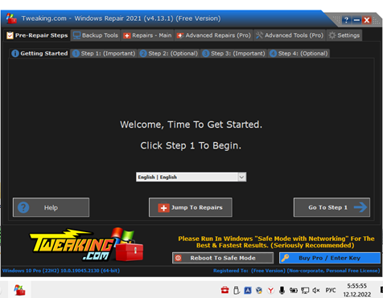

Восстановление системы – средство операционной системы Windows (процесс rstrui.exe),
предназначенный для восстановления работоспособности ОС путём отката (восстановления предыдущего
состояния дисков) системных файлов, ключей реестра, установленных программ и т. д. ВС делает
"моментальный снимок" некоторых системных файлов и реестра Windows и сохраняет их в качестве
точек восстановления. Программа по умолчанию создает точки восстановления один раз в день. Она
постоянно отслеживает действия в системе и создает точку восстановления при определенных
действиях. К типам действий, которые запускают автоматическое создание точек восстановления,
относятся:
- установка программного обеспечения
- обновление драйверов оборудования
- установка новых драйверов оборудования
- ручное создание точек восстановления
- установка программного обеспечения
- обновление драйверов оборудования
- установка новых драйверов оборудования
- ручное создание точек восстановления
ACRONIS TRUE IMAGE
Программа, с помощью которой создаются резервные копии файлов любого формата, электронной почты, диска или его раздела, включая операционную систему, другие программы, настройки, параметры и все данные.
Функционал:
⎯ Резервное копирование диска в локальное хранилище
⎯ Клонирование жесткого диска
⎯ Архивирование данных
⎯ Защита домашних данных
⎯ Синхронизация файлов
⎯ Средства безопасности и конфиденциальности
⎯ Резервное копирование диска в локальное хранилище
⎯ Клонирование жесткого диска
⎯ Архивирование данных
⎯ Защита домашних данных
⎯ Синхронизация файлов
⎯ Средства безопасности и конфиденциальности
УСТАНОВКА И НАСТРОЙКА ПРОГРАММЫ
Программу можно скачать с официального сайта, ознакомившись перед скачиванием с системными требованиями. Для успешной работы Acronis True Image желательно, чтобы компьютер имел следующие характеристики:
⎯ Процессор с частотой от 1 ГГц
⎯ Объем оперативной памяти от 1 Гб
⎯ Свободное место на диске от 1.5 Гб
⎯ Разрешение экрана от 1152×720
⎯ Наличие CD/DVD-привода или флэшки (для создания загрузочного носителя)
⎯ Права администратора (для работы из-под Windows
После открытия файла .exe появляется окно распаковки установщика
ИНТЕРФЕЙС
Вкладка «Резервные копии» позволяет создать резервную копию на диск, облачное хранилище
или другое устройство, также есть возможность просматривать активность и историю
восстановлений.
Вкладка «Защита» позволяет проверять каждый файл, с которым происходит взаимодействие, и защищающая в фоновом режиме ваш компьютер от: атак программ-вымогателей, вредоносных файлов, майнинга криптовалют, вредоносных веб-сайтов.
Во вкладке «Архивы» можно создать безопасный архив данных для освобождения места на диске.
Вкладка «Синхронизация» позволяет синхронизировать файлы и папки между компьютером и Acronis Cloud либо между двумя компьютерами, на которых установлена программа Acronis True Image.
Вкладка «Инструменты» имеет мастера создания загрузочных носителей, имеет функции очистки системы, настройки зоны безопасности, клонирования диска и возможностью установки сторонних производителей.
Вкладка «Учётная запись» позволяет контролировать подписку и управление всеми устройствами через онлайн-панель мониторинга.
Во вкладке «Параметры» можно изменить язык интерфейса, настройки запуска приложения и другое
Вкладка «Защита» позволяет проверять каждый файл, с которым происходит взаимодействие, и защищающая в фоновом режиме ваш компьютер от: атак программ-вымогателей, вредоносных файлов, майнинга криптовалют, вредоносных веб-сайтов.
Во вкладке «Архивы» можно создать безопасный архив данных для освобождения места на диске.
Вкладка «Синхронизация» позволяет синхронизировать файлы и папки между компьютером и Acronis Cloud либо между двумя компьютерами, на которых установлена программа Acronis True Image.
Вкладка «Инструменты» имеет мастера создания загрузочных носителей, имеет функции очистки системы, настройки зоны безопасности, клонирования диска и возможностью установки сторонних производителей.
Вкладка «Учётная запись» позволяет контролировать подписку и управление всеми устройствами через онлайн-панель мониторинга.
Во вкладке «Параметры» можно изменить язык интерфейса, настройки запуска приложения и другое
ФУНКЦИОНАЛ
Для создания резервной копии необходимо открыть соответствующую вкладку. Выбрать объект
создания (доступны диски, файлы, мобильные устройства и облачные сервисы.) и носитель на
этом шаге открыта возможность шифрования резервной копии(рис.5.1.3). После нажатия на
кнопку «Создать копию» начнётся процесс создания копии.
ВОССТАНОВЛЕНИЕ СИСТЕМЫ
Для восстановления системы необходимо перейти на вкладку «Резервное копии», затем
восстановление.
Далее из числа резервных копий выбираем объект восстановления папку, диск или Windows. Для восстановления нажать кнопку «Восстановить»(рис.5.2.1.2). При необходимости можно открыть параметры и выбрать настройки презаписи файлов, приоритета операции, проверки и другого.
Далее из числа резервных копий выбираем объект восстановления папку, диск или Windows. Для восстановления нажать кнопку «Восстановить»(рис.5.2.1.2). При необходимости можно открыть параметры и выбрать настройки презаписи файлов, приоритета операции, проверки и другого.
ЗАЩИТА
Особенностью программы Acronis True Image является функция защиты с возможностью
запустить быстрое и полное сканирование.
- Защита от программ-вымогателей выполняется в фоновом режиме и блокирует процессы даже самых новых программ-вымогателей, чтобы вы могли продолжать работать, как всегда.
- Защита в реальном времени обеспечивает постоянную и непрерывную защиту от потенциально вредоносных файлов и процессов в фоновом режиме.
- Фильтрация веб-сайтов защищает компьютеры от вредоносного ПО с интернет-страниц и от попыток фишинга, блокируя доступ к вредоносному содержимому.
«Оценка уязвимости» - ежедневное сканирование, которое выполняется в фоновом режиме,
обнаруживает уязвимости в вашей системе и приложениях, а затем оценивает их серьезность.
- Защита от программ-вымогателей выполняется в фоновом режиме и блокирует процессы даже самых новых программ-вымогателей, чтобы вы могли продолжать работать, как всегда.
- Защита в реальном времени обеспечивает постоянную и непрерывную защиту от потенциально вредоносных файлов и процессов в фоновом режиме.
- Фильтрация веб-сайтов защищает компьютеры от вредоносного ПО с интернет-страниц и от попыток фишинга, блокируя доступ к вредоносному содержимому.
АРХИВЫ
Архивы предназначены для освобождения места на диске, переместив большие или старые
файлы с компьютера на внешний диск или в Acronis Cloud.
Принцип работы архива:
- Выполняем анализ файлов. Сканируем весь компьютер или выбранную папку. Используем фильтры для сортировки файлов по типу, дате и размеру.
- Выбираем файлы и указываем хранилище архива.: внешний диск или Acronis Cloud.
- Архивируем выбранные файлы. Запускаем процесс, чтобы архивировать выбранные файлы в указанное хранилище. Архивные файлы будут постоянно доступны через проводник Windows или веб-браузер.
- Получаем свободное место на диске
Принцип работы архива:
- Выполняем анализ файлов. Сканируем весь компьютер или выбранную папку. Используем фильтры для сортировки файлов по типу, дате и размеру.
- Выбираем файлы и указываем хранилище архива.: внешний диск или Acronis Cloud.
- Архивируем выбранные файлы. Запускаем процесс, чтобы архивировать выбранные файлы в указанное хранилище. Архивные файлы будут постоянно доступны через проводник Windows или веб-браузер.
- Получаем свободное место на диске
MACRIUM REFLECT
Macrium Reflect — утилита резервного копирования для Microsoft Windows. Она создаёт образы дисков и архивы резервных копий файлов с помощью службы теневого копирования томов Microsoft. Macrium Reflect может создавать полные, инкрементные и дифференциальные резервные копии, а также выборочно создавать резервные копии отдельных файлов и папок. Данные сжимаются и шифруются в режиме реального времени.
Образы можно монтировать как букву диска в Проводнике Windows и восстанавливать с помощью специального компакт-диска Macrium Reflect Rescue CD. В случае частичной или полной потери системы этот образ можно использовать для восстановления всего диска, одного или нескольких разделов или отдельных файлов и папок.
УСТАНОВКА И НАСТРОЙКА ПРОГРАММЫ
Перед установкой программы необходимо ознакомиться с системными требованиями.
Системные требования: Оперативная память: не менее 512MB RAM (минимум 1GB рекомендуется) Windows XP Service Pack 3 или Windows Server 2003 Service Pack 2 и выше Windows / 7 / 8 / 8.1 / 10 x86/x64.Клавиатура и мышь. Для использования загрузочного носителя для восстановления (rescue media) необходим пишущий CD/DVD привод или USB флешка.
После запуска файла .exe открывается загрузочный агент Macrium Reflect (рис.5.2.1). Для продолжения необходимо нажать кнопку «Загрузить».
ИНТЕРФЕЙС
Вкладки на верхней панели представляют основной функционал программы. Есть возможность
изменять панель инструментов (Вид), создавать образы выбранных дисков, резервного
копирования файлов и ОС (Резервное копирование), подключения и отключения образов диска,
аварийного носителя, настроек по умолчанию (Другие задачи) и прочее.
Для создания резервной копии необходимо кликнуть левой кнопкой мыши на диск или папку, которую хотим сохранить и нажать на пункт «Создать образ этого раздела»
Левая часть рабочего стола программы содержит информацию о файловой системе, количестве свободного места, общем размере. В правой части создаются образы диска, происходит клонирование и другое.
Для создания резервной копии необходимо кликнуть левой кнопкой мыши на диск или папку, которую хотим сохранить и нажать на пункт «Создать образ этого раздела»
Левая часть рабочего стола программы содержит информацию о файловой системе, количестве свободного места, общем размере. В правой части создаются образы диска, происходит клонирование и другое.
СОЗДАНИЕ РЕЗЕРВНОЙ КОПИИ
Перед тем, как запустить средство создания резервной копии системного раздела,
необходимо убедиться в наличии места хранения для резервной копии. Это может быть
отдельный раздел жесткого диска, внешний носитель информации, сетевое хранилище.
Для создания резервной копии необходимо кликнуть левой кнопкой мыши на диск или папку, которую хотим сохранить и нажать на пункт «Создать образ этого раздела»
После этого откроется окно с необходимостью указать путь для создания резервной копии..
Для создания резервной копии необходимо кликнуть левой кнопкой мыши на диск или папку, которую хотим сохранить и нажать на пункт «Создать образ этого раздела»
После этого откроется окно с необходимостью указать путь для создания резервной копии..
ВОССТАНОВЛЕНИЕ СИСТЕМЫ
Восстановление системы возможно выполнить только при наличии резервной копии. Для
восстановления необходимо перейти на вкладку «Существующие резервные копии», выбрать
необходимые файлы, папки или диски и нажать «Восстановить» .
WINDOWS REPAIR
Windows Repair (All In One) – это утилита, которая поможет исправить ошибки в системном реестре, восстановить оригинальные настройки, модифицированные при заражении компьютера или установке программ, восстановить стабильную работу браузера Internet Explorer, сервиса Windows Update, межсетевого экрана Windows Firewall и других служб и компонентов ОС.
⎯ Основные функции программы:
⎯ Исправление ошибок реестра
⎯ Исправление прав доступа к файлам
⎯ Ремонт WMI, Windows Firewall, Internet Explorer, MDAC и MS Jet
⎯ Удаление установленных вирусами ограничений
⎯ Исправление прав доступа к файлам
⎯ Удаление временных файлов
⎯ Исправление Windows Updates и многое другое.
Скачать программу можно с официального сайта. После запуска файла .exe начинает процесс установки.
ИНТЕРФЕЙС
Программа имеет настройки только тёмной темы. Имеет встроенный английский, немецкий,
итальянский и французский языки. Есть кнопка помощи «Help», где хранится информация о
программе, разработчике и другая необходимая информация.

Восстановление системы
На первом шаге нам предлагается «правильное обесточивание» для этого необходимо
завершить работу с компьютером, отключить от сети.
На втором шаге будет предложено провести предварительное сканирование компьютера на ошибки. Нажимаем кнопку Open Pre-Scan, для проверки сжатых файлов, жестких и символических ссылок и восстановления переменных сред.
На третьем шаге будет предложено проверить жесткий диск компьютера на ошибки. Необходимо нажать кнопку Check для теста, необходима ли такая проверка вообще и в случае положительного результата нажмите кнопку Open Check Disk at Next Reboot. Для твердотельного накопителя в качестве системного диска производить процедуру проверки не нужно.
На четвертом шаге будет предложено проверить и восстановить защищенные системные файлы. Нажимаем кнопку Do It для начала процедуры проверки и восстановления поврежденных системных файлов.
На пятом шаге можно:
Для открытия окна с выбором инструментов восстановления следует нажать кнопку Open Repairs. На экране отобразится главное окно инструмента восстановления. После окончания выбора пунктов нажимаем кнопку Start Repairs для начала процедуры восстановления, затем перезагружаем компьютер.
На втором шаге будет предложено провести предварительное сканирование компьютера на ошибки. Нажимаем кнопку Open Pre-Scan, для проверки сжатых файлов, жестких и символических ссылок и восстановления переменных сред.
На третьем шаге будет предложено проверить жесткий диск компьютера на ошибки. Необходимо нажать кнопку Check для теста, необходима ли такая проверка вообще и в случае положительного результата нажмите кнопку Open Check Disk at Next Reboot. Для твердотельного накопителя в качестве системного диска производить процедуру проверки не нужно.
На четвертом шаге будет предложено проверить и восстановить защищенные системные файлы. Нажимаем кнопку Do It для начала процедуры проверки и восстановления поврежденных системных файлов.
На пятом шаге можно:
- создать точку восстановления системы: System Restore => Create,
- откатить систему на ранее созданную точку: System Restore => Restore,
- создать резервную копию системного реестра: Registry Backup => Backup
- восстановить системный реестр из ранее созданной резервной копии: Registry Backup
=>
Restore.
Для открытия окна с выбором инструментов восстановления следует нажать кнопку Open Repairs. На экране отобразится главное окно инструмента восстановления. После окончания выбора пунктов нажимаем кнопку Start Repairs для начала процедуры восстановления, затем перезагружаем компьютер.